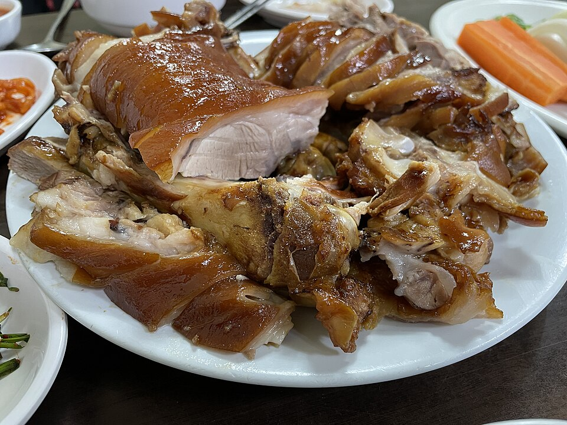

ปูซานในจอทีวี: ถนนจกบัลและวิวกลางคืนจากเขาฮวังรยองซาน
สองจุดในปูซานที่เกี่ยวข้องกับรายการ 'Welcome, First Time in Korea?' ได้แก่ ถนนจกบัลสำหรับขาหมูตุ๋นสไตล์เกาหลี และยอดเขาฮวังรยองซานที่ขึ้นชื่อเรื่องวิวกลางคืน กินมื้อเย็นก่อน แล้วค่อยไปชมแสงไฟเมือง
ปูซาน: เมืองแห่งทะเลและตลาด
ปูซานทอดยาวตั้งแต่ชายหาดแฮอุนแดไปจนถึงตลาดปลาชากัลชี และเสน่ห์ของเมืองนี้ส่วนใหญ่สะท้อนผ่านอาหาร ไม่ว่าจะเป็นทแวจีกุกบับ (ซุปหมูกับข้าว) มิลมยอน (บะหมี่เย็นแป้งสาลี) จกบัล ปลาดิบสด ๆ ที่ชากัลชี และออมุก (ลูกชิ้นปลา) บทความนี้แนะนำสองสถานที่ที่ปรากฏในตอนปูซานของรายการทีวีเกาหลี 'Welcome, First Time in Korea?' (어서와 한국은 처음이지)
สถานที่ที่น่าไป
ถนนจกบัลปูซาน (ถนนขาหมู)

📍 ถนนจกบัลปูซาน · Naver Map · Google Maps
จกบัล หรือขาหมูตุ๋นหั่นเป็นชิ้นเสิร์ฟพร้อมน้ำจิ้ม เป็นหนึ่งในอาหารขึ้นชื่อของปูซาน และถนนสายนี้รวมร้านจกบัลไว้ในที่เดียว นอกจากแบบดั้งเดิมแล้ว ยังมีจกบัลรสเผ็ด (พุลจกบัล) และสลัดจกบัลเย็น (แนงแชจกบัล) ซึ่งเป็นจานเย็นคลุกผักกับซอส เครื่องเคียงที่นิยมสั่งคู่กันได้แก่มักกุกซู (บะหมี่โซบะเกาหลี) และแมแซงีกุก ซุปที่ทำจากสาหร่ายเส้นฝอยละเอียด คลิปไฮไลต์ของรายการ "Busan Jokbal Street – Jokbal, Spicy Jokbal, Cold Jokbal Salad, Makguksu" ติดตามแขกรับเชิญขณะลองชิมเมนูเหล่านี้ทีละจาน หากไปเป็นกลุ่ม การสั่งหลาย ๆ แบบมาแบ่งกันกินเป็นวิธีที่ดีในการเปรียบเทียบรสชาติ
ยอดเขาฮวังรยองซาน
📍 ยอดเขาฮวังรยองซาน · Naver Map · Google Maps
ยอดเขาฮวังรยองซานเป็นที่รู้จักในฐานะหนึ่งในจุดชมวิวกลางคืนที่ดีที่สุดของปูซาน มองเห็นแสงไฟของเมืองแผ่กว้างอยู่เบื้องล่าง เหมาะจะไปคู่กับตอนทริปปูซานของรายการ "Off to Busan to Find a Friend – Haedong Yonggungsa (EP.287)" และให้มุมมองของเมืองที่แตกต่างจากวิวริมทะเลในตอนกลางวันอย่างสิ้นเชิง
เคล็ดลับการวางเส้นทาง
สองจุดนี้จัดรวมไว้ในเย็นเดียวได้อย่างลงตัว กินมื้อเย็นที่ถนนจกบัลช่วงพระอาทิตย์ตก แล้วค่อยขึ้นไปยอดเขาฮวังรยองซานเมื่อฟ้ามืด วิวจะสวยที่สุดหลังจากมืดสนิทแล้ว จึงไม่ต้องรีบกิน ช่วงค่ำบนยอดเขาอาจอากาศเย็นและลมแรงขึ้น ควรพกเสื้อแจ็กเก็ตบาง ๆ ไปด้วย และวางแผนการเดินทางขึ้นลงเขาให้เรียบร้อยก่อนออกเดินทาง
ร้านและสถานที่ในวิดีโอ
- ยอดเขาฮวังรยองซาน (황령산 정상) (황령산 정상) จุดชมวิวกลางคืนที่ดีที่สุดของปูซาน Naver Map Google Maps
- ถนนจกบัลปูซาน (ถนนขาหมู) (부산 족발 거리) (부산 족발 거리) จกบัล (ขาหมูตุ๋น), จกบัลรสเผ็ด, สลัดจกบัลเย็น, มักกุกซู (บะหมี่โซบะเกาหลี), ซุปสาหร่ายแมแซงี Naver Map Google Maps
ที่ตั้งและเวลาเปิดอาจเปลี่ยนแปลง โปรดตรวจสอบแผนที่ก่อนไป
วิดีโอที่เกี่ยวข้อง


บทความอื่น
- คู่มืออาหารจังหวัดชอลลานัมโด: ปูหินยออซู ซีฟู้ดมกโพและกับข้าวหลายอย่าง กวางจูและอาหารจากรายการอาหารเกาหลี
- คู่มือของกินตลาดในโซล: ควรกินอะไรที่ตลาดควังจังและตลาดปลาโนรยังจิน (สรุปจากคลิปฟู้ดทัวร์)
- คู่มือ K-Beauty ในโซล: ช้อปปิ้ง Olive Young มยองดงและซองซู คลินิกผิวและทรีตเมนต์ความงาม
- คู่มืออาหารเกาหลีตามภูมิภาค: อะไรควรกินที่โซล ปูซาน เชจู มกโป แทกู จอนจู และเมืองอื่น ๆ (รวบรวมจากวิดีโอมูคบังและอาหารยอดนิยมบนยูทูบ)
- คู่มือกินในเมืองจอนจู: บิบิมบับ อาหารข้างทางหมู่บ้านฮันอก ตลาดกลางคืนนัมบู และเต็กกัลบีกุนซาน (จากวิดีโอท่องเที่ยว)
- คู่มือกินอาหารในเกาะเชจู: หมูดำ อาหารทะเล ตลาดกลางคืนดงมุน และสถานที่ท่องเที่ยวระหว่างทาง